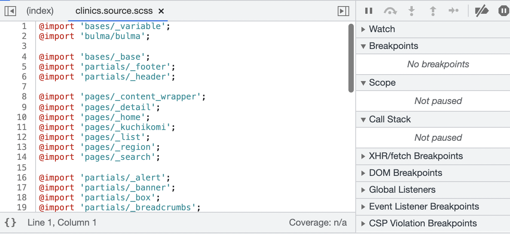

小柳津洋毅 Portfolio Site
自己紹介

パーソナル情報
小柳津 洋毅（おやいづ ひろき）
1986年9月17日生まれ/35歳
経歴
- ・2009年3月 ： 人間環境大学 人間環境学部 人間環境学科 卒業
- ・2011年9月 ： ヤマハポピュラーミュージックアカデミー入学
- ・2015年3月 ： ヤマハポピュラーミュージックアカデミー卒業
-
・2015年9月 ： ヤマハ株式会社 音楽講師として入社
実績
自らイベントの開催を楽器店に提案し、楽器の魅了を伝える演奏イベントと無料体験レッスンイベントを開きました。イベントを通してお客様にも演奏する楽しさを知ってもらえたらと思い、イベントを開催しました。 結果、5名の方が入会、『もっと企画して欲しい』とお声をいただけました。イベントを開いても入会者0名の事があることが大半の中、5名の入会者は凄いとイベント担当者から仰っていただきました。 目的・情熱をもって行動することで、お客様にも楽器の魅了が伝わり良い結果を生むことができました。 - ・現在転職活動中
2021年に学習したプログラミングスキル
3月25日から2022年現在まで1日も休む事なく継続して学習を続けています
-
3月25〜6月4日( 72 日)： フロントエンドの学習
<学習内容> HTML、CSS - 6月5日〜12月4日( 181 日) ： サーバーサイドの学習
<学習内容> Ruby、Ruby On Rails、JavaScript、Git - 9月29日〜現在 ： 実務案件挑戦
<案件内容> 医院紹介サイト（Rails）のCore Web Vitalsの改善案件に参加
どの様な業務をしたいか
新規事業の開発に携わり、人の役に立つサービスづくりに貢献していきたいです。
その為に必要な言語やスキルを常に取り入れていける環境で働きたいです。
どの様なエンジニアになりたいか
将来的には人の役に立ち、喜びを提供できるエンジニアになりたいと考えています。 現職の時から、顧客目線に立って課題解決を提案をすることを大事にしております。 音楽講師の業務では、生徒1人1人通う目的が違うので、生徒のニーズや、レッスンに通う目的をヒアリングし、目標に向けたステップを1人1人変えていくことにしました。 常に目の前の生徒に向き合うことで、結果的に、「とてもわかりやすい」、「ライブが成功できた」など喜びの声を多くいただけるようになりました。 同様に、エンジニアとなり開発に携わることになっても、「人の役に立ち、感謝される」事を大事に同じ気持ちで仕事をしたいと思っています。 講師業で培った相手のニーズを汲み取る力とコミュニケーション力を生かして、人の役に立てるエンジニアになりたいと考えております。
実務実績
医院紹介サイトのCore Web Vitalsの改善
実務案件一部資料
実務案件に挑戦しました
課題
- ・Core Web Vitalsの改善(全ページで共通のCSSを読み込んでしまっている事が原因でページの読み込み速度が低下)
- ・企画から実装（上流工程〜下流工程）まで開発の一連の流れを担当
- ・コントローラー単位で分割してCSSを読み込む事で、ページの読み込みスピード改善
担当
改善方法
使用した技術
- ・フロント：HTML、CSS/li>
- ・言語：Ruby、JavaScript
- ・フレームワーク：Ruby on Rails
- ・インフラ：：Heroku
補足資料
CSS設計で参考にした書籍

実務案件のQiita記事
Qiitaへアウトプット記事投稿
Others
もくもく会主催＆スキルチェックリスト

{kind=link}
{kind=link}
{kind=link}
こだわりポイント
- ・週1〜2回のもくもく会を主催
- ・メンバーはスクールで出会った仲間
- ・「約1時間30分のもくもく会」、30分は質問タイム。活発に意見の交換を行う
- ・いずれスクールメンバーを以外の枠を超えて様々な方と交流したいと思っています
- ・スキルチェックリストを活用してお互いの成長を確認し合う
日報作成
日報の一部

こだわりポイント
- ・1日のやる事を明確化、振り返りを言語化しアウトプット
- ・毎日継続して作成。
- ・今後も勉強した内容を積極的にアウトプットしていく
→新しい知識をインプットしアウトプットする事を常に意識しています
日報リンク(下記リンクよりご覧ください)
日報：小柳津 洋毅YouTube動画投稿
演奏動画


演奏動画＆演奏フレーズ解説
- ・リクエスト頂いた曲を弾いて皆さんの参考になれたらと思い、動画作成しました
- ・楽譜を載せて一緒に演奏出来る様に工夫しました（著作権関係は確認取ってます）
リクエスト受付中
- ・ベースを強調させて音造りをしているので、好きな曲を聞いた時にいつもと違う感覚を味わえると思います
- ・最近はプログラミングに熱中しているので更新がストップしてますが、隙間時間を使って更新していきます
→昔の曲から最近の流行りの曲まで幅広く演奏しています